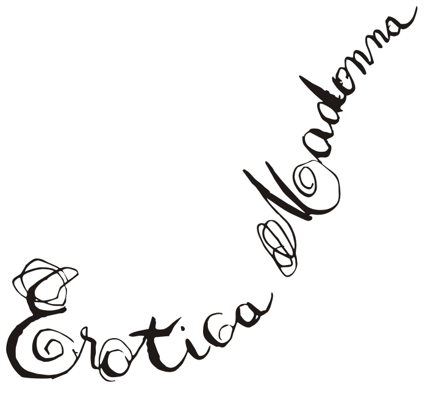
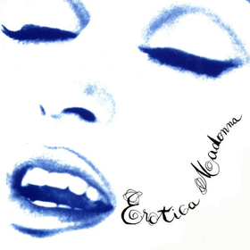
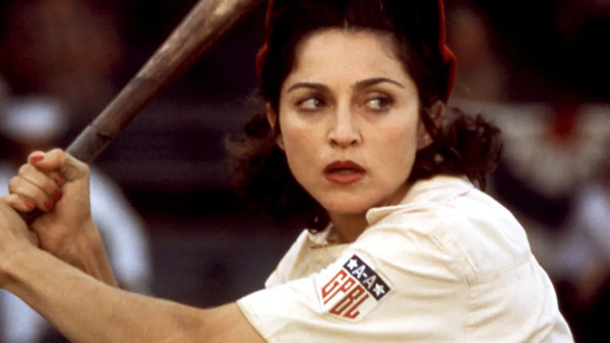
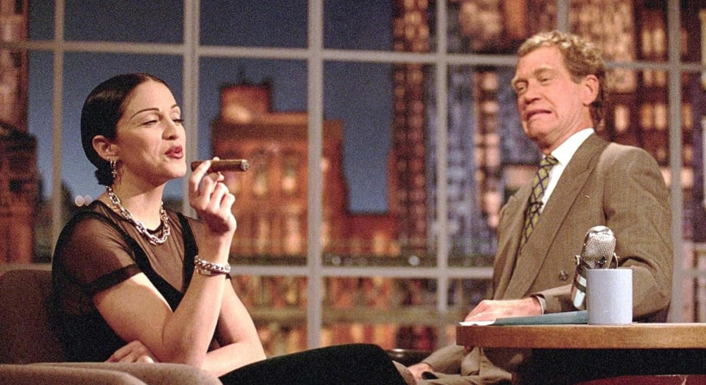

Erotica es el sexto álbum de estudio de Madonna, lanzado a la venta en 1992 junto al libro "SEX" de fotos explícitas de la cantante. Este proyecto fue considerado el primer fracaso de la carrera de Madonna debido a la cancelación masiva que sufrió en 1992 debido a su carácter hipersexual y al libro "SEX" anteriormente mencionado. Además, fue su primer álbum desde Like a Virgin en no llegar al #1 y también el primero en no posicionar ninguna canción en la cima de los listados (lo más cercano a esto fue la canción "Erotica" que llegó al #3). Sin embargo, ha recibido críticas muy positivas en retrospectiva que destacan el crecimiento artístico que este álbum representó para la Reina del Pop y los diversos sonidos con los que experimentó en este proyecto como el Trip-Hop, R&B y House. Temáticamente aborda la sexualidad, la intimidad, el romance los hábitos dañinos, la muerte y el VIH. Cuenta con 14 canciones y logró debutar en el #2 del Billboard 200 de E.E.U.U.

Madonna en la aclamada película "A League of their Own" de 1992.

La infame entrevista de Madonna en el Show de David Letterman en 1994. Es una de las entrevistas más censuradas de todos los tiempos.